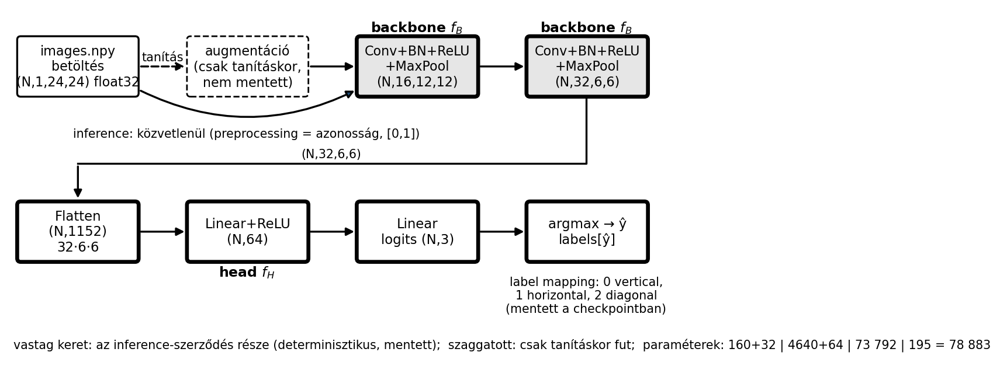

Ez az alfejezet a képosztályozó teljes adatfolyamát rögzíti: a függelék A. szakaszában leírt nyers GlyphLab-képtől a betanított modell három logitjáig, majd a logitból képzett osztályindexig és osztálynévig. A cél nem egy újabb architektúra bemutatása, hanem az, hogy a hallgató pontosan meg tudja mondani, milyen alakkal, milyen normalizálással, milyen címkeszerződéssel és milyen kiértékelési módban halad végig egy batch. Előismeret: a 20.4. V. ellenőrző pont: indokolt CNN-választás architektúra-döntési lapja, a 22.4. Augmentációs kísérlet és domainváltozás train/eval transzformációk szétválasztása, a 23.4. Hibaszeletek és alkalmazási határ hibaszeletek és a 24.4. VI. ellenőrző pont: megbízható CNN-training megbízható training-protokoll. Visszautalunk a 13.1. Kép mint diszkrét többcsatornás jel NCHW-konvenciójára, a 21.1. Inicializálás és varianciaterjedés inicializálási varianciaterjedésére és a 24.1. Tanulási görbe és hibadiagnózis hibadiagnosztikájára.
Induló kérdés. Egy betanított modell checkpointja
három logitot ad vissza; az osztályindexet az argmax, az osztálynevet a
mentett label mapping adja. A GlyphLab képek már float32,
NCHW,
tartományúak. Mely lépések maradnak a nyers tömb betöltése után, és hány
paraméterrel jár az utolsó réteg? A becslést az alaklánc szakaszának
végén ellenőrizheti.
Definíció (osztályozási adatfolyam). Legyen a bemeneti tér , a célhalmaz , ahol a GlyphLab alapbeállításán , , . Egy osztályozó adatfolyam az alábbi komponensekből áll:
data/images.npy alakja
float32; data/labels.npy alakja
int64; data/metadata.csv rekordonként
index, scene_id, view_id, label, split, xmin, ymin, xmax, ymax
mezőket ad. A split jelenetszinten független (120/30/30 jelenet). A
GlyphLab minden jelenetéhez két nézet tartozik, ezért a 120/30/30
jelenet 240/60/60 képet jelent, és egy jelenet két nézete nem kerülhet
különböző splitbe. Az xmin, ymin, xmax, ymax mezők a
forrásséma részei (a későbbi detekciós feladatokhoz); az osztályozó
adatfolyam nem használja őket, a doboz nem bemenet és nem címke.forward-ban történik. A
kilapítás PyTorch-konvenciója csatorna-sorrendű:
.CrossEntropyLoss-t használ; a cél int64 osztályindex, és a
modellben nincs softmax ([D07]).A konkrét modell legyen
majd a head
Számítás (a GlyphCNN shape-lánca). A fenti modellre, ha , akkor a közbülső alakok:
Levezetés. A 14.1. Stride, padding, dilation és kimeneti méret alfejezetben levezetett kimeneti méret
szerint a Conv1-re , , , , tehát ; a MaxPool , , , tehát . A Conv2-re ugyanez , a második pool . A kilapítás skalárt ad mintánként, a lineáris rétegek pedig a mátrixszorzás definíciójából és alakot.
A modell paraméterszáma, esetén:
| Réteg | Paraméterek |
|---|---|
| Conv2d(1,16,3) + bias | |
| BatchNorm2d(16) | |
| Conv2d(16,32,3) + bias | |
| BatchNorm2d(32) | |
| Linear(1152,64) + bias | |
| Linear(64,3) + bias |
Összesen tanítható skalár. Ez a kis modell a GlyphLab 240 train képére szánt, előtanítás nélküli kiinduló modell; a TorchVision előtanított modelljei ([D13]) itt nem szükségesek.

A kézi ellenőrzéshez nem kell adathalmazt betölteni: a modellt
véletlen inputon definiáljuk, és assert-ekkel rögzítjük az
alakokat.
# lab/model_def.py
import torch
import torch.nn as nn
class GlyphCNN(nn.Module):
def __init__(self, num_classes: int = 3):
super().__init__()
self.features = nn.Sequential(
nn.Conv2d(1, 16, 3, padding=1), nn.BatchNorm2d(16), nn.ReLU(),
nn.MaxPool2d(2),
nn.Conv2d(16, 32, 3, padding=1), nn.BatchNorm2d(32), nn.ReLU(),
nn.MaxPool2d(2),
)
self.head = nn.Sequential(
nn.Linear(32 * 6 * 6, 64), nn.ReLU(), nn.Linear(64, num_classes),
)
def forward(self, x: torch.Tensor) -> torch.Tensor:
return self.head(torch.flatten(self.features(x), 1))# A lab/ munkakönyvtárból:
python - <<'PY'
import torch
from model_def import GlyphCNN
torch.manual_seed(20261020)
model = GlyphCNN()
x = torch.randn(8, 1, 24, 24, dtype=torch.float32)
feat = model.features(x)
z = model(x)
print(feat.shape) # torch.Size([8, 32, 6, 6])
print(z.shape) # torch.Size([8, 3])
print(sum(p.numel() for p in model.parameters())) # 78883
assert feat.shape == (8, 32, 6, 6)
assert z.shape == (8, 3)
assert sum(p.numel() for p in model.parameters()) == 78883
print("shape check passed")
PYA fenti kód futtatása a hallgató gépén ellenőrzi a számított alakokat
és a paraméterszámot; a mért kimenet
torch.Size([8, 32, 6, 6]), torch.Size([8, 3]),
78883, majd shape check passed (Python 3.12.3,
torch 2.15.0+cpu, CPU).
Előfeltételek. Python 3.12, a lab/
csomag telepítve (cd lab && uv sync), NumPy 2.3.5,
torch 2.14.1 (CPU) és pandas 2.3.3. A lock fájl
(lab/uv.lock) ezeket a verziókat telepíti; a fejezetben
közölt mért kimenetek a könyv ellenőrző környezetéből származnak (Python
3.12.3, NumPy 2.5.4, pandas 3.1.0, torch 2.15.0+cpu). A két környezet a
laborokban ugyanazt a kimenetet adta; eltérés esetén az utolsó jegyek
különbözhetnek (loss kb.
,
accuracy egy megfigyelési egységnyi). Szükséges fájlok:
data/images.npy, data/labels.npy,
data/metadata.csv. Futtatás: cd lab, majd
python train_classifier.py, végül
python infer.py --kind diagonal. Várható futásidő CPU-n
néhány perc, a tényleges időt a futás naplózza.
A labor a lab/ munkakönyvtárban fut, a GlyphLab eredeti
adatfájljaival. A tanítási script betölti a képeket és a célokat, a
metadata.csv split oszlopa alapján train/val
indexeket képez, a train splitet jelenetszintű felosztásként kezeli, és
a validációs pontosság szerint kiválasztott legjobb checkpoint
mentésekor rögzíti a label mappinget is. A példák Python 3.12.3, NumPy
2.5.4, pandas 3.1.0 és torch 2.15.0+cpu alatt futottak; a
weights_only=True és a torch.inference_mode()
ebben a PyTorch-verzióban elérhető.
# lab/train_classifier.py
import numpy as np, pandas as pd
import torch
from torch.utils.data import DataLoader, TensorDataset
from model_def import GlyphCNN
torch.manual_seed(20261020)
torch.set_num_threads(1)
device = torch.device("cpu")
X = np.load("data/images.npy") # (360,1,24,24) float32
y = np.load("data/labels.npy") # (360,) int64
meta = pd.read_csv("data/metadata.csv")
# A `index` oszlop (nem a CSV sorszáma) köti a rekordot az images.npy sorához.
assert list(meta.columns) == ["index", "scene_id", "view_id", "label", "split",
"xmin", "ymin", "xmax", "ymax"], meta.columns
assert len(meta) == len(X) == len(y) == 360, (len(meta), X.shape, y.shape)
assert X.shape == (360, 1, 24, 24) and X.dtype == np.float32, (X.shape, X.dtype)
assert y.shape == (360,) and y.dtype == np.int64, (y.shape, y.dtype)
assert meta["index"].tolist() == list(range(len(meta)))
assert set(meta.split) <= {"train", "val", "test"}, set(meta.split)
tr = meta.loc[meta.split == "train", "index"].to_numpy()
va = meta.loc[meta.split == "val", "index"].to_numpy()
te = meta.loc[meta.split == "test", "index"].to_numpy()
assert (len(tr), len(va), len(te)) == (240, 60, 60), (len(tr), len(va), len(te))
Xt, yt = torch.from_numpy(X[tr]), torch.from_numpy(y[tr])
Xv, yv = torch.from_numpy(X[va]), torch.from_numpy(y[va])
Xte, yte = torch.from_numpy(X[te]), torch.from_numpy(y[te])
dl = DataLoader(TensorDataset(Xt, yt), batch_size=32, shuffle=True)
model = GlyphCNN().to(device)
opt = torch.optim.AdamW(model.parameters(), lr=3e-3, weight_decay=1e-4)
lossf = torch.nn.CrossEntropyLoss()
best_acc = -1.0
best_epoch = 0
best_state = None
for epoch in range(20):
model.train()
for xb, yb in dl:
xb, yb = xb.to(device), yb.to(device)
opt.zero_grad()
loss = lossf(model(xb), yb)
loss.backward()
opt.step()
model.eval()
with torch.inference_mode():
vacc = (model(Xv.to(device)).argmax(1) == yv.to(device)).float().mean().item()
print(f"epoch {epoch+1:02d} val_acc={vacc:.4f}")
if vacc > best_acc: # szigorú javítás: az első legjobb marad
best_acc = vacc
best_epoch = epoch + 1
best_state = {k: v.detach().clone() for k, v in model.state_dict().items()}
assert best_state is not None
model.load_state_dict(best_state)
model.eval()
with torch.inference_mode():
test_acc = (model(Xte.to(device)).argmax(1) == yte.to(device)).float().mean().item()
print(f"best epoch {best_epoch:02d} val_acc={best_acc:.4f} test_acc={test_acc:.4f}")
torch.save({
"model": model.state_dict(),
"arch": "GlyphCNN",
"input_schema": "float32 NCHW 1x24x24 [0,1]",
"labels": {0: "vertical", 1: "horizontal", 2: "diagonal"},
"best_epoch": best_epoch,
"val_acc": best_acc,
}, "glyph_cls.pt")
print("saved glyph_cls.pt")Futtatás:
cd lab
python train_classifier.pyA val_acc sorokat a könyv környezetében lefuttatva
rögzítettük (Python 3.12.3, NumPy 2.5.4, pandas 3.1.0, torch 2.15.0+cpu,
CPU, torch.set_num_threads(1), seed 20261020); a mért
kimenet:
epoch 01 val_acc=0.3667
epoch 02 val_acc=0.6833
epoch 03 val_acc=0.7833
epoch 04 val_acc=0.8167
epoch 05 val_acc=0.9000
epoch 06 val_acc=0.9667
epoch 07 val_acc=0.9667
epoch 08 val_acc=0.9667
epoch 09 val_acc=0.9667
epoch 10 val_acc=0.9667
epoch 11 val_acc=0.9667
epoch 12 val_acc=0.9667
epoch 13 val_acc=0.9667
epoch 14 val_acc=0.9667
epoch 15 val_acc=0.9667
epoch 16 val_acc=0.9667
epoch 17 val_acc=0.9667
epoch 18 val_acc=0.9667
epoch 19 val_acc=0.9667
epoch 20 val_acc=0.9667
best epoch 06 val_acc=0.9667 test_acc=1.0000
saved glyph_cls.ptA végső tesztet a protokoll szerint csak a best checkpoint
kiválasztása után, befagyasztott modellen értékeljük (22.4. Augmentációs kísérlet és domainváltozás, 23.4. Hibaszeletek és alkalmazási határ); a
tanítási szkript ezt a 20. epoch után egyszer elvégzi, és a
test_acc értéket is kiírja.
Az új inputra szolgáló inference-parancs egy korábban nem látott, helyben előállított mintát készít:
# lab/infer.py
import torch, argparse
from model_def import GlyphCNN
def make_sample(kind: str) -> torch.Tensor:
x = torch.zeros(1, 1, 24, 24, dtype=torch.float32)
if kind == "vertical":
x[..., 6:18, 10:14] = 1.0
elif kind == "horizontal":
x[..., 10:14, 6:18] = 1.0
elif kind == "diagonal":
idx = torch.arange(24)
for d in range(-1, 3): # 4 px széles sáv, mint a másik két minta
col = (idx + d).clamp(0, 23)
x[..., idx, col] = 1.0
return x
p = argparse.ArgumentParser()
p.add_argument("--kind", choices=["vertical", "horizontal", "diagonal"], required=True)
p.add_argument("--ckpt", default="glyph_cls.pt")
a = p.parse_args()
ckpt = torch.load(a.ckpt, weights_only=True)
if "labels" not in ckpt:
raise KeyError("a checkpoint nem tartalmaz labels leképezést")
labels = {int(k): str(v) for k, v in ckpt["labels"].items()}
model = GlyphCNN()
model.load_state_dict(ckpt["model"])
model.eval()
x = make_sample(a.kind)
with torch.inference_mode():
z = model(x)
prob = z.softmax(dim=1)
yhat = int(z.argmax(dim=1).item())
logits_np, probs_np = z.numpy(), prob.numpy()
print("logits:", logits_np)
print("probs:", probs_np)
print("predicted:", labels[yhat])python infer.py --kind diagonalA kimenet a fenti, 20 epochos tanítás és a 6. epoch legjobb checkpointjának betöltése után mért futásból származik (Python 3.12.3, torch 2.15.0+cpu, CPU):
logits: [[-6.286462 -8.311524 4.678683]]
probs: [[1.7293762e-05 2.2825275e-06 9.9998045e-01]]
predicted: diagonalÉrtelmezés: a softmax pozitív, összegük
;
az argmax a legnagyobb logithoz tartozó indexet adja, a név pedig a
mentett labels mezőből jön, nem a logit abszolút
nagyságából.
Az F5 kísérlettervezési feladat kötelező sablonja. A válaszban adja meg a hipotézist; a független és a függő változót; a kontrollt vagy baseline-t; a modellarchitektúrát, az optimalizálót, a tanulási rátát és az epochszámot; a seedek számát és konkrét értékét; a metrikát és a megfigyelési egységet; az előre rögzített, számmal megfogalmazott döntési szabályt és a statisztikai próbát; valamint az erőforráskeretet. Ha a feladat nem tanít modellt, a tanítási recept helyett az adott eljárás kontrollját, döntési szabályát és erőforrását kell kitölteni.
F1 (fogalmi, nehézség 1, elvárt eredmény: 3–4 mondatos válasz). Melyik transzformáció lehet része az inference-szerződésnek, és melyik nem? Indokoljon egy-egy példával a GlyphLab adatkészleten.
F2 (levezetési, nehézség 2, elvárt eredmény: alaklánc és
flatten dimenzió). Vezesse le a 3. szakasz (alaklánc)
shape-képletével: egy
bemenetre Conv2d(1,16,3,padding=1),
MaxPool2d(2), Conv2d(16,24,3,padding=1),
MaxPool2d(2) után mekkora a kilapított
jellemződimenzió?
F3 (implementációs, nehézség 2, elvárt eredmény: futtatható
függvény). Írjon predict_from_array(x_np)
függvényt, amely egy (24,24) float32 NumPy-tömböt vár, és
(osztályindex, valószínűségvektor) párt ad vissza a fenti
modellből. A modell betöltése legyen a függvényen kívül,
model.eval() és torch.inference_mode()
használatával.
F4 (hibakeresési, nehézség 2, elvárt eredmény: ok, következmény, javítás, kontroll). A hallgató a mentett checkpointot egy másik szkriptben így értékeli:
NAMES = {0: "horizontal", 1: "vertical", 2: "diagonal"}A tanítási val accuracy volt, de az új szkript a nevekre számolt accuracy értéke körül van. Hol a hiba?
F5 (kísérleti/transzfer, nehézség 3, elvárt eredmény: protokollvázlat). Tervezzen protokollt a kiinduló modell átvitelére: az új procedurális adatgenerátor RGB képeket ad, ugyancsak vertical/horizontal/diagonal címkékkel. Mi változik a preprocessingben, a backbone első rétegében és a head bemeneti dimenziójában? Adjon baseline-t és validálási elvet.
F1. Az inference-szerződésbe csak determinisztikus,
címkemegőrző leképezések kerülhetnek: a GlyphLab esetében a
float32 NCHW
tartomány már adott, esetleg a rögzített
normalizálás. A véletlen transzláció, forgatás vagy zaj csak a tanítási
augmentáció része; ha a betanított modell kiértékelésekor is
véletlenítünk, a
becslés nem a szerződött bemenetre vonatkozik, és a clean/corrupt
párosítás (22.4. Augmentációs kísérlet és
domainváltozás) is felborul. Forgatásnál ügyelni kell a
címkemegőrzésre: a 180°-os forgatás megőrzi a vonalorientációt, a 90°-os
viszont a vertical és a horizontal osztályt felcseréli, ezért az
orientációcímke szempontjából nem címkemegőrző.
F2. Az egyes lépések: . Az utolsó aktivációs tér , tehát a kilapított dimenzió . A head első lineáris rétegének bemenete ezért .
F3.
import torch
from model_def import GlyphCNN
model = GlyphCNN()
model.load_state_dict(torch.load("glyph_cls.pt", weights_only=True)["model"])
model.eval()
LABELS = {0: "vertical", 1: "horizontal", 2: "diagonal"}
def predict_from_array(x_np):
x = torch.from_numpy(x_np).float().unsqueeze(0).unsqueeze(0) # (1,1,24,24)
with torch.inference_mode():
z = model(x)
p = torch.softmax(z, dim=1)
yhat = int(z.argmax(dim=1).item())
return yhat, p.numpy()[0]Alakellenőrzés: a bemenet (24,24) float32-ból
(1,1,24,24) lesz, a kimenet valószínűségvektor
(3,); az argmax a
halmazból választ.
F4. Ok: a NAMES szótár
nem azonos a modell tanításakor használt label mappinggel; a checkpoint
labels mezője
{0: vertical, 1: horizontal, 2: diagonal}, tehát a
kiértékelő a 0 indexet tévesen „horizontal”-ként kezeli.
Következmény: a confusion matrix sor/oszlop nevei
elcsúsznak. Legyen
a confusion matrix,
a valódi
és a prediktált
osztályú minták száma; az indexekre számolt accuracy
,
és ez változatlanul
.
A nevekre számolt accuracy viszont a felcserélt névmapping miatt más: a
60 képes kiértékelő halmaz osztályonként 20 képet tartalmaz (lásd a
GlyphLab-szerződést), ezért közel tökéletes modellnél a vertical és
horizontal predikciók neve felcserélődik, és csak a 20 diagonal minta
marad név szerint is helyes, azaz
;
a néhány tévesztés ezt legfeljebb kissé módosítja. A nevekre „hamisan
alacsony” accuracy tehát nem a modell hibája, hanem a mapping hibája.
Javítás: a kiértékelő szkript a checkpoint mentett
labels mezőjét olvassa be, vagy a külső rögzített szerződés
szerint ugyanazt a mappinget használja. Kontroll:
számoljuk ki a nyers indexekre a (pred == y).mean()
értéket; ennek egyeznie kell a tanítási val accuracy-vel.
F5. Protokollvázlat: az új adatgenerátor minden
jelenetét 32×32 RGB-ben menti; a képeket float32 [0,1] NCHW
alakra konvertáljuk, és az új adatra becsült csatornánkénti
normalizálást rögzítünk. A backbone első konvolúciója
Conv2d(3,16,3,padding=1) lesz, a második konvolúció 32
csatornás marad. A 32×32 bemenet alaklánca
,
ezért a head előtti jellemzőtérkép
,
a kilapított dimenzió
;
a head első lineáris rétegét Linear(2048,64)-re kell
cserélni. A
csak akkor lenne helyes, ha a második konvolúció 24 csatornás lenne
(mint az F2 eltérő példájában), de a kiinduló modell 16→32
architektúrájánál nem. Baseline: az eredeti 24×24 modellre resizelt (pl.
bilineáris) képek kiértékelése, változó tényező: a natív 32×32 bemenetre
tanított modell. A split jelenetszintű rétegzett; metrika az
osztályonkénti accuracy és a makro-átlagolt accuracy (a kiegyensúlyozott
teszt miatt a kettő közel azonos), a bizonytalanságot scene-rétegzett
bootstrap CI-vel közöljük (az [S04] csak a feltételes, ismételt
mintavételi értelmezést adja; a GlyphLab csoportos tervét a 23.4. Hibaszeletek és alkalmazási határ alfejezet
tárgyalja). Három seeddel
(,
,
)
ismételjük mindkét ágat, és a seedek közötti szórást külön jelentjük.
Döntési szabály: az átvitelt akkor tekintjük támogatottnak, ha a natív
32×32 modell és a resizelt baseline accuracy-jának jelenetszintű páros
különbségére a 95%-os bootstrap CI alsó határa 0 felett van, és a
pontbecslés legalább 2 százalékpont; ha a CI tartalmazza a 0-t, nem
állítunk javulást. Az eredmény csak erre a mesterséges shiftre érvényes,
természetes képi általánosításra nem.
Rögzített recept. A tanítás a labor receptjével fut: AdamW,
lr=3e-3, weight_decay=1e-4, 20 epoch és 32-es
batch, mindkét ágban ugyanazokkal a seedekkel. Erőforrás: CPU,
float32, két ág × három seed = hat futás, néhány perc.
A leggyakoribb hiba a label index–név leképezés
kezelése. A checkpoint önmagában csak az indexeket adja vissza; ha a
felhasználó külső szótárat rendel, az nem a betanított modell
szerződése. Legyen egy modell, amelyet a
mappinggel tanítottak. Ha a kliens az F4-beli
NAMES = {0: "horizontal", ...} szótárt használja, egy olyan
bemenetre, ahol a valódi osztály diagonal, a modell
logitja lesz a legnagyobb; a kliens NAMES[0] alapján
„horizontal”-t jelent, tehát a numerikus index helyes, a közölt név
mégis téves. A mapping ezért a mentési rekord kötelező eleme.
Önellenőrzés. A 3. szakaszban (alaklánc) minden közbülső alak és a paraméterszám explicit; a CrossEntropyLoss bemenete logits, a cél int64; a normalizálás minden fázisban azonos; a checkpoint az architektúra, a bemeneti séma és a label mapping mellett lett mentve. NCHW-konvenció a 13.1. Kép mint diszkrét többcsatornás jel szerint, az inicializálási skála a 21.1. Inicializálás és varianciaterjedés szerint marad a kis modell stabil tartományában.
Az osztályozó adatfolyam a dataset schema, a determinisztikus
preprocessing, a backbone, a head, a logits és a label mapping együttes
szerződése. A GlyphLabon a bemenet float32 NCHW
,
;
a modell két konvolúciós blokk után
jellemzőtérképet ad, amelyet a head elején
dimenzióra lapítunk, majd két lineáris réteggel három logitot adunk. A
batch alaklánca:
.
A végrehajtott művelet: CrossEntropyLoss logitokból, int64
cél; a modellben nincs softmax. A mentett checkpoint magában foglalja az
architektúrát, a bemeneti sémát és a label mappinget, mert a logitok
indexeiből a nevek nem rekonstruálhatók.
A 25.2. Multilabel és hierarchikus cél a
bináris, többosztályos és multilabel célok közötti eltérést vizsgálja: a
multilabel fej kimenete
logits lesz BCEWithLogitsLoss-szal és {0,1}^K
céllal, ahol a jelen alfejezetben rögzített adatfolyam- és
checkpoint-szerződés mintájára kell a maszk- és threshold konvenciókat
is menteni.